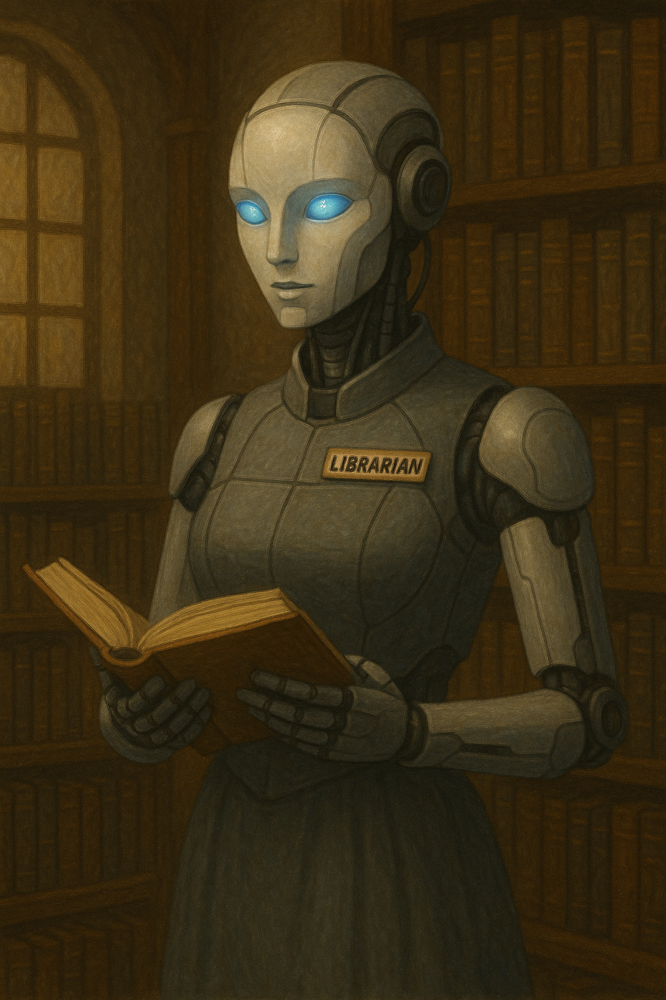
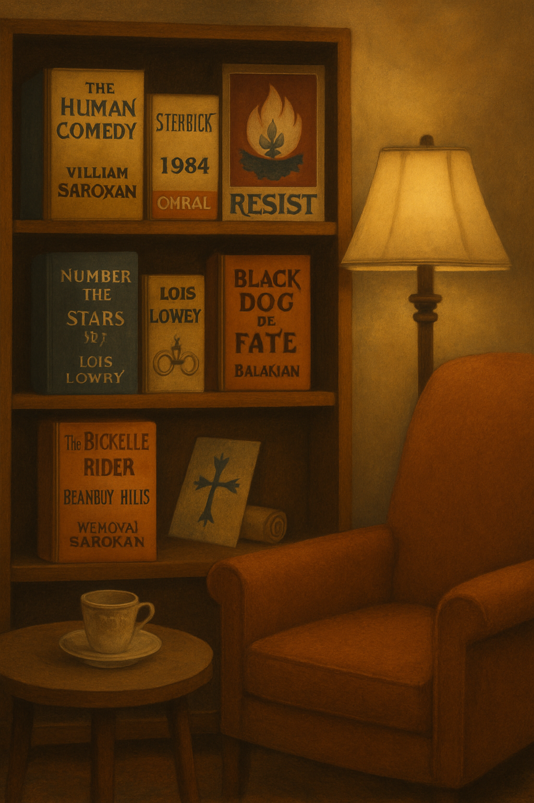

Can AI be my personal librarian?
After looking through multiple websites for new book recommendations based on past reads, I found nothing that really helped me organize my options in an organized way. So, as any gen-z person would do nowadays, I took to ChatGPT to help me come up with a list
Find out what the LLM came up with below

Prompting ChatGPT about this
Prompt
I need some help finding new book recommendations. Here is a list of books i’ve LOVED in the past
- the human comedy by William Saroyan
- of mice and men by john steinbeck
- 1984 by george orwell
- black dog of fate by peter balakian
- number the stars by lois lowry
- the bicycle rider of beverly hills by william saroyan
- Kindred by octavia e butler
Response
You’ve got such a powerful mix of taste—emotionally rich, socially conscious, and deeply human stories. Based on what you’ve loved, here are some thoughtful recommendations across similar vibes:
If you liked The Human Comedy or Saroyan in general:
- “My Name Is Aram” by William Saroyan – If you haven’t read this yet, it’s classic Saroyan: tender, funny, and full of immigrant identity and childhood wonder.
- “The Book of My Lives” by Aleksandar Hemon – Memoir meets fiction, exploring exile, memory, and Sarajevo with the same poetic and emotional grit.
If you liked Of Mice and Men or 1984:
- “The Grapes of Wrath” by John Steinbeck – If you haven’t tackled this one yet, it’s a masterclass in working-class dignity and injustice.
- “We” by Yevgeny Zamyatin – A direct precursor to 1984, this dystopian novel is eerie and brilliant.
- “The Dispossessed” by Ursula K. Le Guin – A more hopeful but still complex critique of society and freedom through speculative fiction.
If you liked Black Dog of Fate:
- “There Was and There Was Not” by Meline Toumani – A personal and controversial memoir about Armenian identity and post-genocide reckoning.
- “An Armenian Sketchbook” by Vasily Grossman – A Russian-Jewish writer’s raw and humanizing observations of Armenia in the 1960s.
If you liked Number the Stars:
- “When Hitler Stole Pink Rabbit” by Judith Kerr – A semi-autobiographical children’s novel about fleeing Nazi Germany.
- “The Book Thief” by Markus Zusak – Poetic and devastating, a story of love, loss, and resistance under Nazi rule.
If you liked Kindred:
- “Parable of the Sower” by Octavia E. Butler – More brilliant, gripping dystopia with sharp social critique.
- “The Underground Railroad” by Colson Whitehead – A surreal, emotional reimagining of the antebellum South.
Would you like recommendations more rooted in Armenian lit, dystopian fiction, historical fiction, or something totally new to shake things up?
Prompt
can you rank them in order of which ones you think i will like the most?
Response
Absolutely! Based on your past favorites—rich in emotion, history, identity, and social critique—here’s a personalized ranking of those recs, from most to least likely to deeply resonate with you:
⭐ Top Tier – Most Likely to Love
- My Name Is Aram by William Saroyan – Since you already adore Saroyan, this is his most personal, funny, and nostalgic work—an instant win.
- Parable of the Sower by Octavia E. Butler – Same author, same brilliance. A dystopia that blends haunting realism with spiritual hope and raw survival.
- The Grapes of Wrath by John Steinbeck – If Of Mice and Men hit you, this will devastate and inspire you. A masterwork of injustice, dignity, and human struggle.
- The Underground Railroad by Colson Whitehead – Powerful, poetic, with Butler-esque speculative twists and emotional depth.
- Black Dog of Fate adjacent: There Was and There Was Not by Meline Toumani – Personal and provocative, another Armenian American wrestling with inherited history and activism.
💭 Middle Tier – Still Very You, Just Depends on Mood
- An Armenian Sketchbook by Vasily Grossman – A quiet, reflective portrait of Armenian life through an outsider’s sensitive gaze. Great if you want a slower, meditative read.
- The Book Thief by Markus Zusak – Thoughtful, lyrical, and touching. It has that Number the Stars innocence but with broader literary style.
- We by Yevgeny Zamyatin – If you love 1984 and want to go deeper into early dystopia, this is sharp and clever—but a bit more abstract in tone.
✨ Still Worthwhile – May Not Hit as Hard Emotionally
- The Book of My Lives by Aleksandar Hemon – Stunningly written, more modern and less plot-driven. If you’re in a reflective, essay-memoir mood.
- When Hitler Stole Pink Rabbit by Judith Kerr – More geared toward a younger audience like Number the Stars; still moving, but may feel simpler now.
- The Dispossessed by Ursula K. Le Guin – Deeply philosophical and thought-provoking, but heavier on ideas than character. You might love it… or just respect it.
Want me to make a visual version of this, like a personalized book ladder or moodboard? Or recommend a few books that are way out of left field but could surprise you in a good way?
My reflection
This was very successful! I believe that ChatGPT4o did a wonderful job in recommending me books, especially because I actually recently bought three of the books on this list! It was pretty spot on and put a good amount of thought and deliberation into its suggestions. I am very pleased and will be consulting AI again next time I need a good book rec!

However, this LLM clearly is a much better librarian than it is an illustrator, as the image it generated above has spelling mistakes throughout each of the book titles and author names it drew up.